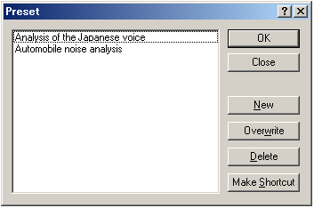

DSSF3 > RA > Reference Manual

| Button | Description |
|---|---|
| List box | The presets which were saved previously are listed. |
| OK | Reproduces the preset selected on the list box. |
| Cancel | Closes this dialogue, without doing anything. |
| New | Saves the current status. |
| Overwrite | Overwrites the preset selected on the list box by the current status. |
| Delete | Deletes the preset selected on the list box. |
| Make Shortcut | The shortcut of selected preset is created to a desktop. |
DSSF3 > RA > Reference Manual